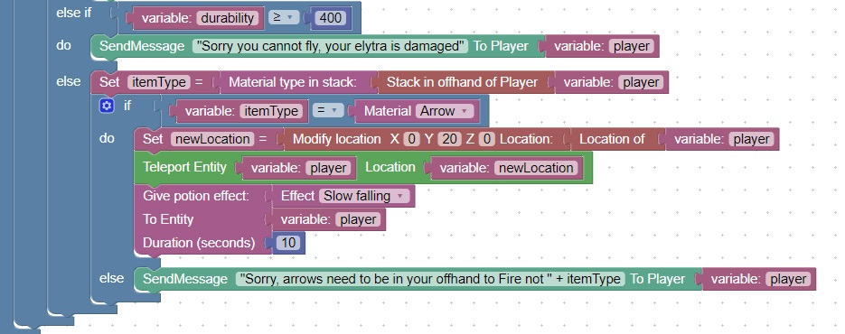

Checking the off hand
Since a right click in the air will not generate an event if there is nothing in the off-hand
We should check the off-hand before launching the player into the air
There is now a block in Entities,Player which will allow you to get the stack that is in the off-hand
Modify your code to check the off-hand before launching the player into the air (on a left click)
You can use this code snippet as a guide
